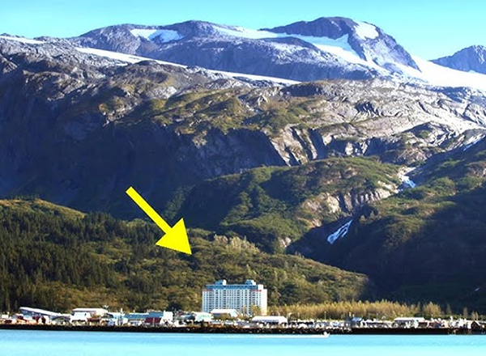
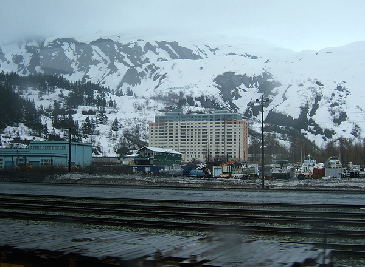
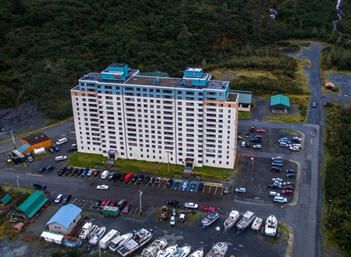

Whittier
єдине місто на Землі, де все населення живе в одному будинку

Краса Віттіера
1 -- Віттіер оточують гори, водоспади і водна гладінь. Субарктичний клімат робить його самим вологим містом в США: в рік там випадає 5 024 мм опадів, а вітер може досягати 100 км/ч. 51 кв. км — рівно таку площу займає це місто на Алясці. У ньому проживає 214 чоловік, причому майже всі в одному будинку. Недалеко від міста розташований льодовик, який у 1915 році назвали на честь поета Джона Грінліф Віттіер (John Greenleaf Whittier). Ми вражені історією міста на краю світу, і нам кортить розповісти її вам.
3 -- У роки холодної війни тут будують житло і зони відпочинку на 1 000 чоловік. У 50-х з’явилося 2 будівлі. Перше — Будова Бакнера (Buckner Building) — зараз у занедбаному стані, а від одного — Вежі Бегіч (Begich Towers) — використовується донині. Обидві споруди повинні були стати частиною великого військового комплексу, планувалося побудувати ще 8 подібних споруд для потреб армії.
4 -- Переломна точка в історії міста — 27 березня 1964 року, коли сталося Велике Аляскинська землетрус. Його магнітуда оцінюється в 9,2 бала, підземні поштовхи викликали цунамі. Хвилі тоді досягали 13 метрів і сильно зруйнували місто: було знищено кілька будівель на набережній.
5 -- 14-поверхова будівля побудована в 1957 році і спочатку називалося по імені полковника Вільяма Уолтера Ходжа (William Walter Hodge), який командував 93-му інженерним полком на Аляскинській трасі. У 1972 році Вежі Бегіч отримали своє нинішнє ім’я на честь члена демократичної партії Ніка Бегіч, конгресмена від Аляски. У єдиного в Віттіер будинку 14 поверхів і 3 модуля, які з’єднуються між собою численними коридорами, ліфтами і сходами. У будівлі плоский дах і прямокутна форма. Звідки у назві слово «вежа», та ще й у множині? Справа в тому, що з північної сторони розташоване 2 виступаючих модуля, які нагадують башти.
6 -- У Вежах Бегіч живе трохи більше 200 чоловік, а
діти входять в школу по тунелю із-за суворих погодних умов.
Це все населення міста. Крім апартаментів в приміщенні розташовані
пошта, методистська церква, кілька магазинів, пральня, відділення поліції,
мерія, лікарня і навіть маленький готель. У Віттіері 2 дитячі майданчики:
одна з них відкрита тільки влітку, а друга знаходиться під дахом — погодні
умови не завжди дозволяють маленьким городянам спокійно гуляти на вулиці. У
непогожі дні вони ходять в школу за спеціальним тунелей.
7 -- Тут немає звичного поділу на будинок і школу: діти і вчителі сприймають один одного як добрих сусідів або друзів, тому немає необхідності встановлювати дисципліну. Щоб підтримувати здоров’я, жителі Віттіера ходять в шкільний спортзал, який відкритий в години роботи школи, — звичного фітнес-центру тут немає. На парковці поряд з машинами можна побачити човни.
Шлях перегороджує гірський масив, у розпорядженні жителів і гостей літак, човен, потяг чи автомобіль. Останні курсують по тунелю через гору Мейнард. Через тунель проходить односмугова дорога — і для машин, і для поїздів. Туди і назад можна проїхати за $ 13, місцеві жителі користуються річним абонементом вартістю $ 500.
9 -- There is a schedule near the tunnel: 15 minutes it allows traffic in one direction, the next 15 minutes - in the other. At night, the road is closed. Locals sometimes go to Anchorage, located about an hour away. However, if you do not have time to return by 10:30 PM, you will have to spend the night in the car.
10 -- Віттіер здається забутим містом, але сюди приїжджають туристи. Адже з порту починаються круїзи: бажаючі можуть подивитися на айсберги і білих ведмедів. Тому періодично тут можна побачити лайнери. Інтерес викликає і сам місто — номери в готелях бронюють заздалегідь. Місцеві займаються рибною ловлею, роботою в порту або пов’язані з туризмом.